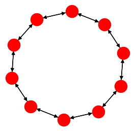

Ring¶
New in version 2.11.
#include <pagmo/topologies/ring.hpp>
-
class
ring: public base_bgl_topology¶ This user-defined topology (UDT) represents a bidirectional ring (that is, a ring in which each node connects to both the previous and the following nodes).
-
ring()¶ Default constructor.
Equivalent to the constructor from edge weight with w = 1.
-
explicit
ring(double w)¶ Constructor from edge weight.
New edges created via
push_back()will have a weight of w.- Parameters
w – the weight of the edges.
- Throws
std::invalid_argument – if w is not in the \(\left[0, 1\right]\) range.
-
explicit
ring(std::size_t n, double w)¶ Constructor from number of vertices and edge weight.
This constructor will initialise a ring topology with n vertices and whose edges will have a weight of w.
New edges created via subsequent
push_back()calls will also have a weight of w.- Parameters
n – the desired number of vertices.
w – the weight of the edges.
- Throws
std::invalid_argument – if w is not in the \(\left[0, 1\right]\) range.
unspecified – any exception thrown by
push_back().
-
void
push_back()¶ Add the next vertex.
- Throws
unspecified – any exception thrown by the public API of
base_bgl_topology.
-
double
get_weight() const¶ - Returns
the weight w used when constructing this topology.
-
std::string
get_name() const¶ Get the name of the topology.
- Returns
"Ring".
-
template<typename
Archive>
voidserialize(Archive &ar, unsigned)¶ This function implements the serialisation of a
ring.- Parameters
ar – the input/output archive.
- Throws
unspecified – any exception thrown by the serialisation of a
base_bgl_topologyor of primitive types.
-